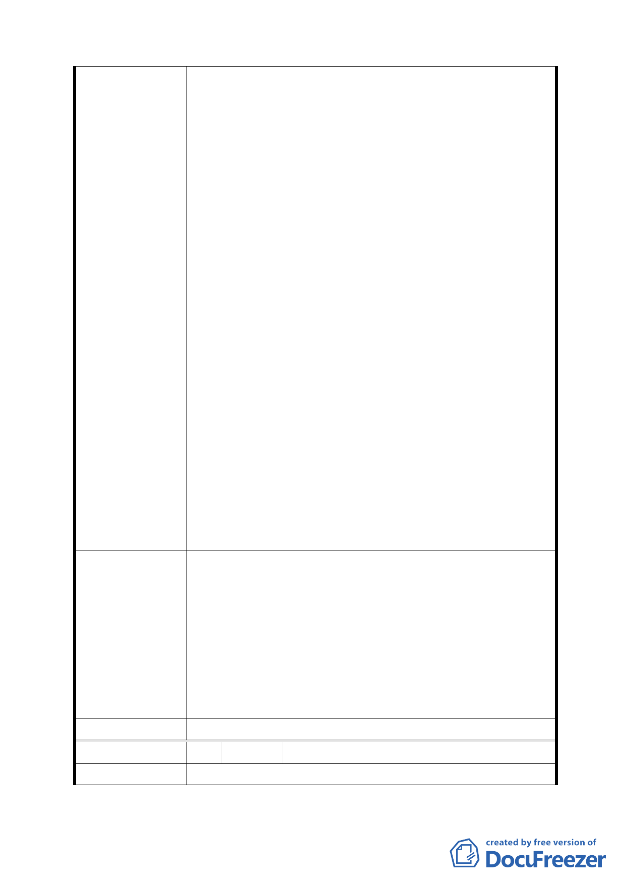

建議辦法
委員會決議
編號
陳情理由
新活動中心內各機關位於此區皆會辦理大型活動及
景美溪堤外運動與貓空地區假日車、人潮活動，而本
身此區域之車輛停車需求就非常高，卻每天又有非常
多的外車來此停放另換機車上下班，而此區域之停車
場設備屈指可數，市府卻未曾顧慮到該區域應該增設
停車場設施（難道我們是臺北市邊疆之次等公民），
交通大隊卻連一壽街、樟新街 10 米寬之巷弄拖吊車
都不斷來回巡迴拖吊，市府不曾考慮過有否建設足夠
停車場設備空間與必須有足夠之配套措施，然後才能
要求市民守法、不違規，這是都市計畫單位必須徹底
好好規劃之方向，建設公共設施使得區域成為優質之
環境規劃，更何況原先市場用地就已借給臺北市停車
管理處設置平面收費停車場使用，解決部分停車空間
問題。
二、位於木柵一期重劃區內「樟新市場」市場用地旁的
樟新何活動中心內已有社會局公辦民營之臺北市一
壽重殘養護中心設置，難道我們的優值重劃區是專門
用來設置重殘養護中心變為『全國重殘養護示範重劃
區』的大本營嗎？套用臺北市都發局對於變更此市場
用地不重複設置之理念：我們重劃區居民也強烈認為
因應重殘養護中心不應重複設置之需求，應平均分配
設之於臺北市各行政區，對樟新里重劃區居民才是公
平。
鑒請都市計畫單位將樟新市場用地變更為多目標功能大
樓用地。
辦法：
一、地下附設收費停車場維持解決里民停車空間使用，
其場站可利用緊鄰之樟新公園地下合併使用。
二、樓上可設置室內籃球場提供青少年運動去處及銀髮
族休閒及老人福利服務照顧需求，希冀每位長者皆能
獲得優質且有尊嚴的生活。
同編號 1。
3 陳情人 方盈傑(文山區樟新市場)
一、社會局欲將本用地規劃為傷殘養護中心，完全缺乏
-8-